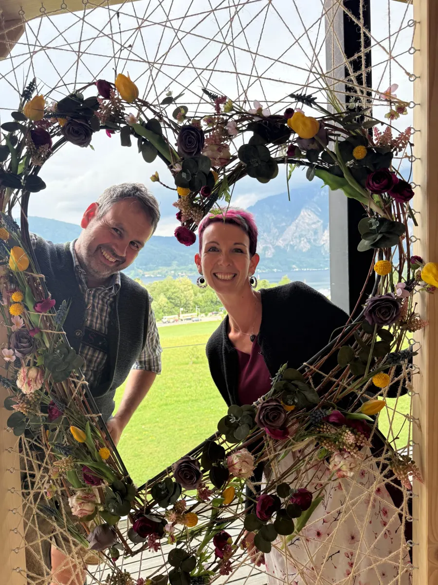

Almromantik › Horská chata
Schmiedsipplalm · 1 300 m
Dovolená na horské chatě v Gosau
Naše chata s vlastním stravováním na samotě pro 1 až 6 osob. Kamna na dřevo, gril, hvězdná obloha.
Horská chata
Vysoko nad Gosau, obklopená loukami a lesem, stojí naše chata na pastvině Schmiedsipplalm. Žádní sousedé, žádný provoz a večer hvězdná obloha, jakou v údolí skoro neuvidíte.
Vaří se a topí v kamnech na dřevo, ložnici vyhřívá komín. Solární panely dodají dost elektřiny na světlo a kávovar. Je tu tekoucí voda a rustikální sprcha, toaleta je klasický suchý záchod. Prostě opravdový život na chatě.
Spaní
Vybavení
- Obytná kuchyně s tradičními kamny na dřevo, troubou a nádržkou na teplou vodu
- Ložnice vyhřívaná komínem
- Dřevo na topení v ceně
- Solární elektřina, spotřebiče do 500 W (nabíjení mobilu, světlo, náš kávovar)
- Teplá voda v koupelně z plynového ohřívače
- Rustikální sprcha a umyvadlo
- Suchý záchod
- Chladná spíž místo lednice
- Nádobí, smaltované hrnky, příbory, kuchyňské náčiní
- Ložní prádlo a ručníky v ceně
- Gril a terasa s výhledem na hory
- 2 parkovací místa, posledních 300 m pěšky
- Domácí zvířata po dohodě
- Doporučeno pro děti zhruba od 5 let
- Slabý signál mobilu (většinou A1), nejlepší kousek nad chatou
Příjezd
Klíč si vyzvednete u nás na adrese Austraße 22 v Gosau, kde dostanete i popis cesty. Vlastním autem pojedete asi 20 minut po lesní cestě na parkoviště, posledních 300 m půjdete pěšky.
Chatu lze rezervovat od května do října. V zimě není přístupná.
Hned za rohem
Túry od chaty
- LöckerseeTiché přírodní jezírko ve vrchovišti Löckermoos s výhledem na Gosaukamm
- Chata TriamerObsluhovaná chata v 1 348 m s domácí kuchyní a slunnou terasou, konec června až září
- RossalmPastvina pro krávy a mladý dobytek v 1 387 m se svačinou z vlastní produkce, konec května až konec září
- PlankensteinalmNejvyšší cíl ve výšce přes 1 500 m s nejlepším výhledem na údolí Gosau, pro zkušené
Dobré vědět
- Minimální pobyt 2 noci
- Klíč si vyzvednete u nás na adrese Austraße 22 s krátkou instruktáží
- Před příjezdem vyplníte online přihlašovací formulář za všechny spolucestující
- Záloha 30 % bankovním převodem do 7 dnů od rezervace
- Závěrečný úklid 89 € vč. dřeva, plynu a likvidace odpadu
- Místní poplatek 4,00 € za osobu a noc, děti do 15 let osvobozeny
- Storno dle AGBH 2006: do 3 měsíců před příjezdem zdarma, od 3 měsíců do 1 měsíce předem 40 %, od 1 měsíce do 1 týdne předem 70 %, v posledním týdnu před příjezdem 90 % ceny rezervace
- Rezervovat lze do 1 dne před příjezdem
Záměrně jednoduché
Co vás na chatě čeká
Chata není komfortní rekreační dům, ale skutečný život na horách. Přečtěte si prosím před rezervací:
- Žádná lednice, zato chladná spíž
- Elektřina z fotovoltaiky, jen pro spotřebiče do 500 W, tedy žádný fén
- Vaří a topí se dřevem
- Suchý záchod místo splachovacího WC
- Slabý signál, většinou jen nad chatou
- Posledních 300 m jdete pěšky, jídlo si přivezete sami
Kdo hledá právě tohle, bude chatu milovat.
Rezervovat chatu online
Volné termíny, výpočet ceny a okamžitá závazná rezervace. Bez poptávky, bez čekání.
Online rezervaci právě zprovozňujeme. Do té doby rezervujte telefonicky nebo e-mailem.
Dotazy? Tel. +43 664 11 44 926
info@almromantik.at
Časté dotazy k chatě
Kdy lze chatu rezervovat?
Od května do října. V zimě není chata dostupná.
Je chata opravdu na samotě?
Ano. Pod chatou vede turistická stezka, po které občas někdo projde, ale jen málokdo. Klid a přírodu máte prakticky jen pro sebe.
Kde dostanu klíč?
U nás doma na adrese Austraße 22 v Gosau. Vysvětlíme vám vše důležité o chatě: kamna na dřevo, vodu, elektřinu i cestu nahoru.
Jak se dostanu k chatě a jaké auto potřebuji?
Od nás jedete asi 20 až 25 minut do kopce po lesní cestě. Běžné auto stačí až ke dvěma parkovacím místům, posledních 300 m jdete pěšky. Myslete na to při balení.
Je v ceně povlečení a ručníky?
Ano, obojí je v ceně. Povlečení je připravené k povlečení, ručníky najdete v koupelně.
Je tam elektřina a teplá voda?
Elektřina pochází z fotovoltaiky. Nabíjení mobilu, světlo a náš kávovar fungují, spotřebiče nad 500 W jako fén nebo vysavač ne. Teplá voda je v koupelně z plynového ohřívače, v kuchyni z nádrže na kamnech.
Jak se topí, je k dispozici dřevo?
Topí a vaří se na kamnech na dřevo v obytné kuchyni, komín vyhřívá i ložnici. Dřevo na topení je v ceně. Jak správně zatopit, vám ukážeme při předání klíče.
Je tam lednice?
Ne. Pro vaše potraviny je tu chladná spíž.
Je tam signál mobilu?
Jen slabý, většinou v síti A1. Nejlépe to funguje nad chatou. V nouzi nás zastihnete na +43 664 11 44 926.
Co s odpadky?
Ten za vás zlikvidujeme, je to už zahrnuto v závěrečném úklidu za 89 €, stejně jako dřevo a plyn.
Od jakého věku je chata vhodná pro děti?
Doporučujeme ji pro děti zhruba od 5 let.
Jsou povolena domácí zvířata?
Po dohodě ano. Dejte nám prosím vědět při rezervaci.

Vaši hostitelé
Heike a Martin
Žijeme v Gosau a statek Schmiedsipplhof je v naší rodině po generace. Heike je vaší hostitelkou na statku i na horách, Martin jako truhlářský mistr všechna naše ubytování sám naplánoval, postavil a zařídil. Těšíme se na vás.